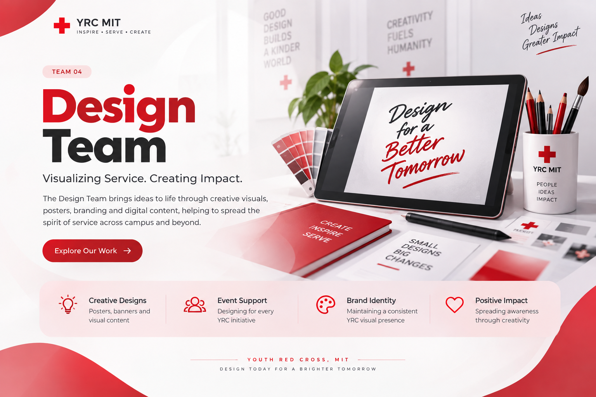
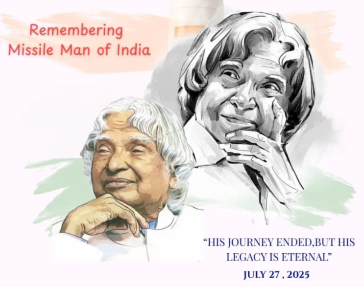
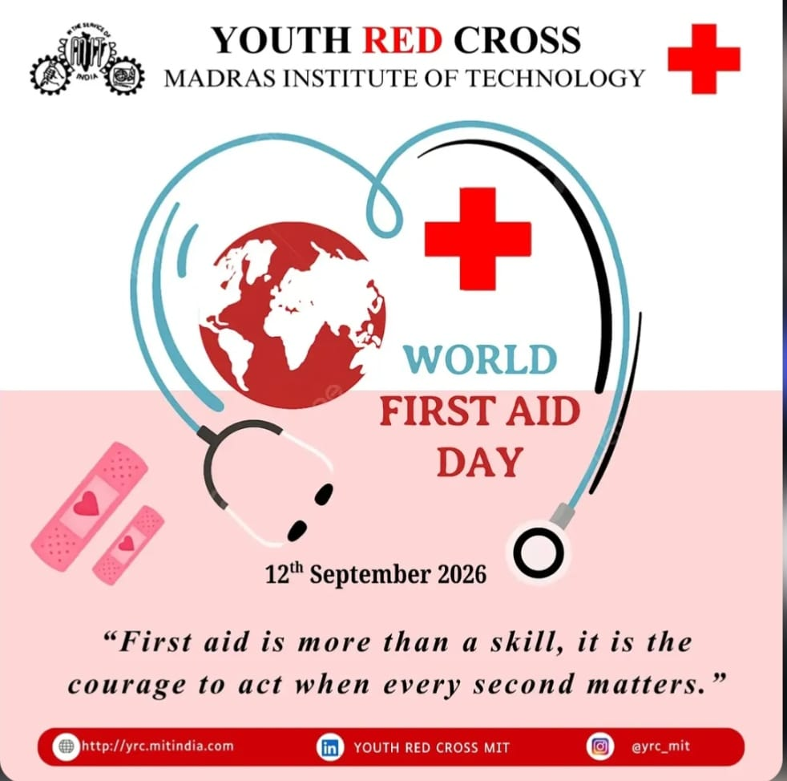
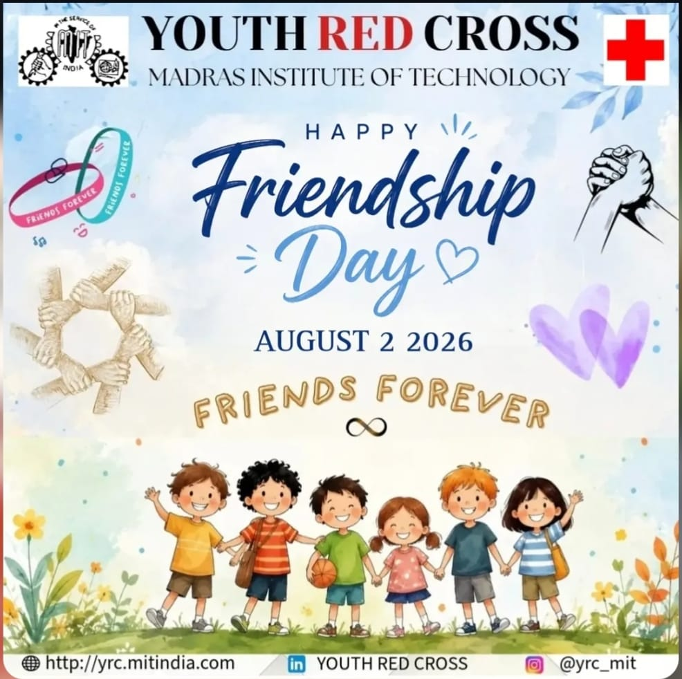
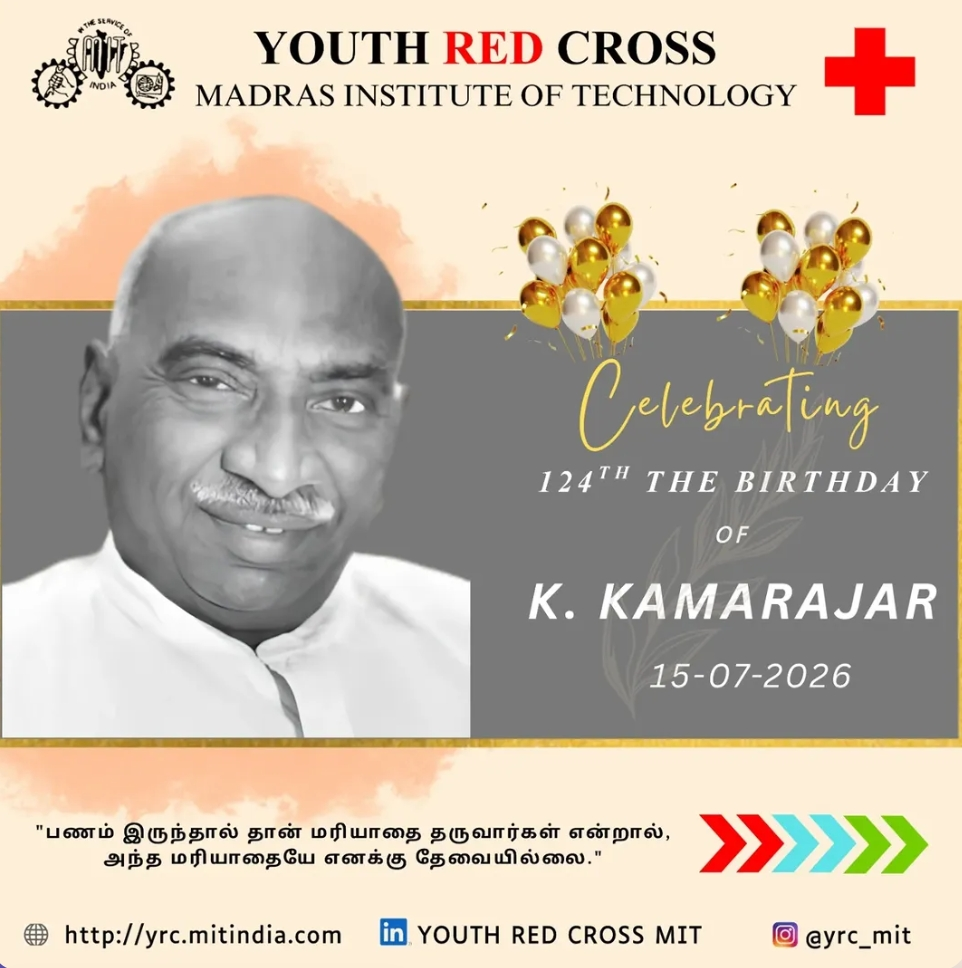
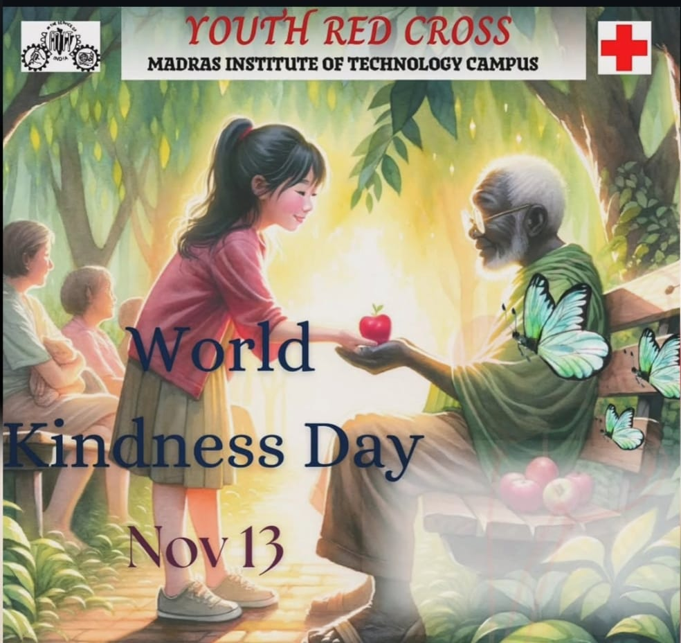
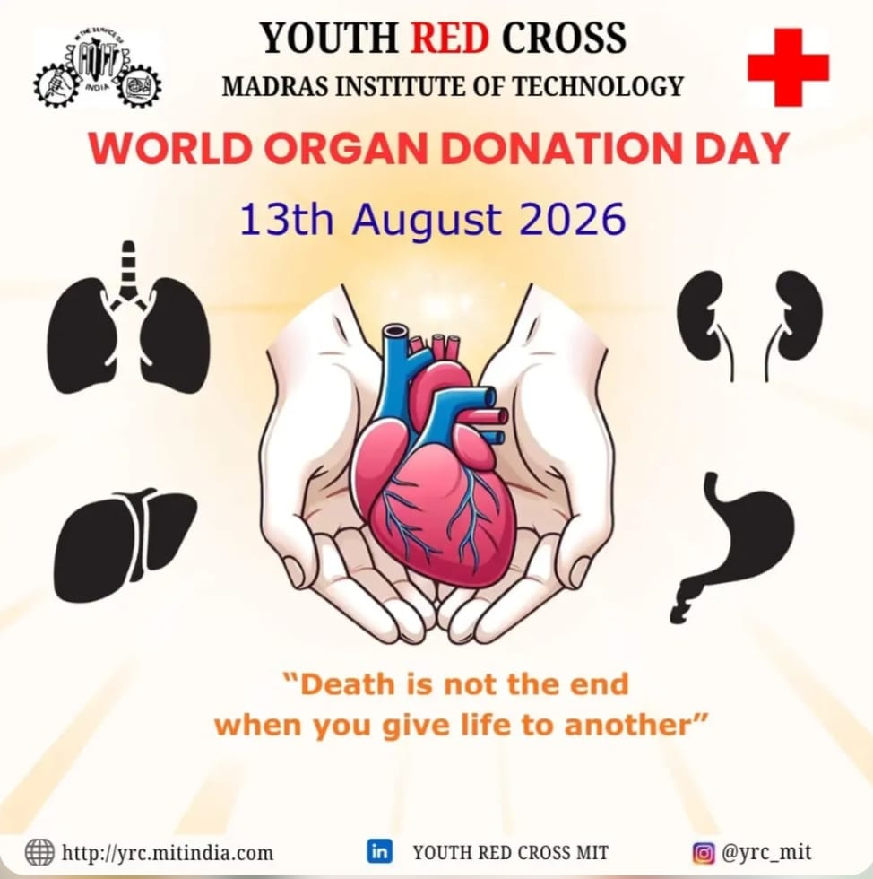

Sharing the Spirit of Service
The Social Media Team of Youth Red Cross (YRC), MIT is responsible for documenting, designing, promoting, and communicating the activities and initiatives of YRC through digital platforms.
Through photography, videography, graphic design, content creation, and digital communication, the team showcases YRC's service activities and achievements to students, volunteers, alumni, and the wider community.
The team works closely with all YRC teams to document their activities, capture meaningful moments, create engaging content, and spread awareness about the spirit of service.

Creating a Positive Digital Impact
To build a strong and positive digital presence for YRC, MIT by sharing stories of service, inspiring student participation, and connecting the YRC community with the wider society through meaningful digital communication.
Inspire
Encourage students to engage in meaningful service.
Connect
Bring the YRC community closer through digital media.
Share
Showcase the spirit and impact of YRC activities.
Communicating the Spirit of Service
-
01
Creatively showcase YRC activities, events and achievements.
-
02
Document meaningful moments through photography and videography.
-
03
Create engaging and informative digital content.
-
04
Promote awareness and encourage student participation.
-
05
Preserve YRC memories and achievements through quality digital documentation.
Turning Service into Stories
We use creativity and digital communication to showcase the activities, achievements, and impact of YRC, MIT.
Photography
Capturing meaningful moments, events, and volunteer activities that reflect the spirit of service.
Videography
Creating engaging videos that showcase YRC activities, events, stories, and achievements.
Creative Design
Designing posters, announcements, graphics, and promotional materials for YRC initiatives.
Content Creation
Developing meaningful captions, stories, and digital content that communicate our message effectively.
Event Promotion
Promoting YRC events and initiatives to reach more students and encourage active participation.
Digital Communication
Connecting YRC with students, volunteers, alumni, and the wider community through digital platforms.
Spreading Awareness Through Creativity
Through creative digital content, we share important messages, commemorate inspiring personalities, and create awareness about health, kindness, and social responsibility.






Making a Digital Difference
Every post, design, photograph, and story helps us spread awareness and share the spirit of service with a wider community.
Awareness
Spreading important health, social, and community awareness messages through creative digital content.
Wider Reach
Connecting YRC initiatives and activities with students, volunteers, alumni, and the wider community.
Engagement
Encouraging students and the community to engage with and participate in meaningful YRC initiatives.
Documentation
Preserving YRC activities, achievements, and memories through meaningful digital documentation.
Our Social Media Accounts
Stay connected with YRC, MIT through our official social media accounts and follow our journey of service.
Be Part of the Story of Service
Follow YRC, MIT on our social media platforms and stay connected with our activities, awareness initiatives, achievements, and stories of service.